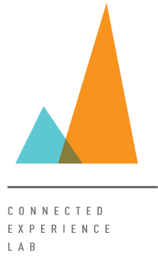

<footer class="w-full h-full border-t border-opacity-40 border-gray-600 bg-footer pb-4 ">
        
    <div class="w-full container mx-auto flex flex-row justify-center gap-8">
        <div class="w-1/4 flex flex-col text-center md:text-left md:justify-between py-6">
            <a class="uppercase font-bold py-4">Explore More</a>
            <div class= "flex-grow border-t border-gray-400 pb-6"></div>
            <div class="w-full flex flex-row">
                <a href="https://cmustrudel.github.io/">
                    
                </a>
                <a href="http://coexlab.com/">
                    
                </a>
            </div>
        </div>
        <div class="w-1/4 flex flex-col text-center md:text-left md:justify-between py-6">
            <a class="uppercase font-bold py-4">Contact Us</a>
            <div class= "flex-grow border-t border-gray-400"></div>
            <div class="w-full flex flex-row text-base">
                <p>
                    Wean Hall 5115, Institute for Software Research <br>
                    School of Computer Science, Carnegie Mellon University <br>
                    5000 Forbes Ave <br>
                    Pittsburgh, PA, 15213 USA 
                </p>
            </div>
        </div>
    </div>
</footer>